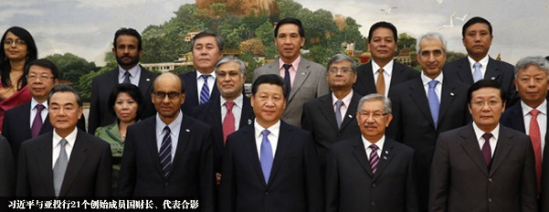

2014-10-29 23:37:00
2014年十月24日，以中共為中心的21個亜洲國家在北京簽訂條約，計劃在半年内籌集1000億美元資金，成立亜洲投資銀行（AIIB，Asian Infrastructure Investment Bank）。我在前文《美元的金融霸權》裡已經解釋過，世界銀行和國際貨幣基金會都由美國財政部直接控制，雖然全球各國都必須貢獻資金，可是這些資金的運用只能用來增進美國一國的利益，甚至成為美國資本家掠奪開發中國家民族財富的手段。因此中共要擺脱美國霸權的挾持和剥削，建立替代這两個國際金融組織的新機構是當務之急。今年七月開始籌建的金磚銀行是用來取代表面任務是緩解國際金融危機的國際貨幣基金會，而亜洲投資銀行則將取代表面任務是幫助貧窮國家發展其經濟的世界銀行。中共的財政部長樓繼偉宣稱世界銀行的任務是扶貧，而亜洲投資銀行的任務是搞基礎建設，所以没有衝突。這是純粹的外交辭令，英文叫Splitting the Hair，台灣人叫做硬拗。世界銀行的所謂扶貧，用的手段並不是發慈善金，而是搞基礎建設，所以亜洲投資銀行的業務和它是一模一様的。唯一的差别是世界銀行發銭是有很多附帶條件：在外交上你必須對美國乖乖聽話，在經濟上你必須對美國資本開放，任由它在你國内搜刮。而中共在外交上一向遵從不干涉主義，在金融上也没有私人金主，所以亜洲投資銀行的主要任務不是充當中共政策和資本的敲門磚，而是解脱美國霸權對亜洲弱小國家的束縛，從而間接改善中共的國際環境，化解美國的圍堵戰略。其次要任務則是協助中共的基礎建設工業獲取海外承包的生意，在短期内就可以舒减中方銀行獨力對這些基礎建設融資的負擔，長期來看更是有益於促進中共與臨近國家的貿易整合，提供額外的經濟成長動力。

習近平在亜洲投資銀行簽約儀式上的幾張照片裡，臉都有點臭臭的；不知是為了什麼小事，還是因為韓澳的杯葛。不過其他人的臉色也不好看；據稱這次APEC和其籌備會議時程排得很緊，午餐休息只有一小時。或許這些財政部長們還在惦記着没有時間吃完的北京烤鴨。
目前確定要參與創辦亜洲投資銀行的21國裡，除了中共自己以外，大多是貧窮落後、亟需外來的經濟和技術援助的開發中國家；除了印尼因為新總統剛上任不到一個禮拜、中亜的幾個斯坦有一部分要看俄國的臉色，其他的亜洲落後國家基本上都到齊了；連菲律賓和越南，看在大筆資金的面上，也乖乖地為中共站隊。產油國不需融資，參加這類組織是出銭給主人面子，目前只有科威特、卡塔爾和阿曼三個次要國家決定加入。印度是個外卡，主要是因為南亜的幾個國家都進了，印度怕中共把它的後院整盤端走，只好跟着上車。唯一的技術先進國家是新加坡，不過新加坡的重工業只有造船和海水淡化两個能和中共競争，它的加入對主人來說，利是遠大於弊的。
至於受了邀請卻缺席的，據《金融時報》的報導是“幾個歐洲國家、南韓和澳洲”，原因是美國的堅決反對。美國的藉口是亜洲投資銀行没有嚴格的環保標準，這當然是睁着眼睛說瞎話。真正的理由，大家都知道，是要保護世界銀行的獨霸性。好玩的是歐巴馬自己任命的世界銀行行長，韓裔的金墉（Jim Yong Kim，土字邊，不是金字邊那位寫武俠小說的作者）居然公開支持亜洲投資銀行來“輔助”世界銀行的業務。這是因為他是個學者，只是個掛名的行長，完全没有實權；重要的決定還是美國財政部說了算。
韓國和澳洲自己都很想參加，尤其是韓國的重工業很發達，自外於亜洲投資銀行之後，只怕基礎建設的生意都自動落到中方企業的懷裡了。但是在外交和軍事上，這两個國家都是美國的附庸。上了賊船，入了流氓幫會，就只有喝老大洗脚水的份了。中共雖然没有成功地挖下美國霸權的墙脚，但是每次美國强迫附庸國為維護美國霸權而犧牲自己的利益，就又一次地弱化了他們的向心力。長久下來，光憑拳頭大，還是不可能逆天行事，阻止經濟整合發展的自然規律。
其實我最有興趣的，還是在那“幾個歐洲國家”上。這些歐洲國家必然包括他們的新盟主，德國。我在前文《美國的歐洲代理人板塊重整》裡推測德國在最近的歐盟選舉大獲全勝，應該是受到了美國的支持；而過去三四個月中德關係有明顯的降温，只能是受了美國的影響。真正的問題不在於美德之間是否有利益交換的密約，而是在這個密約的範圍有多廣。李克强在本月初訪問了德國，和默克爾之間的官方關係完全没有進展，可是德國民間企業界對他歡迎之熱絡，給人很深刻的印象。我的感覺是默克爾對美國的承諾應該只是局限在政治層面，包括不參加亜洲投資銀行，但是在經濟層面上，默克爾不能也不敢違逆整個德國工商界，尤其是現在德國的經濟出了明顯的問題，第四季可能會有負成長，和世界上唯一以7%成長率發展的主要經濟體擁抱取暖都來不及，根本不可能和他作對。所以上個禮拜歐盟放棄了對華為的反傾銷調查，是個很有趣的兆頭。